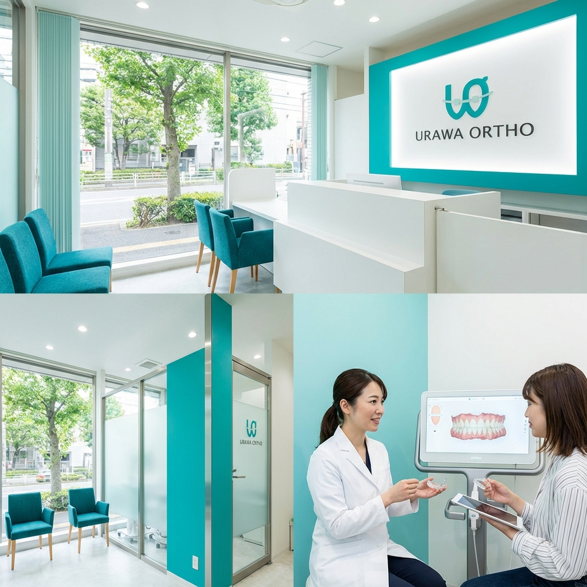

本日の診療19:00まで診療中
アクセス浦和駅 西口 徒歩1分
FLOW初診の方へ
01
無料相談
お口の状態を確認し、治療方針や費用の目安を丁寧にご説明します。
02
精密検査
レントゲン撮影や歯型採取を行い、詳細な治療計画を作成します。
03
治療開始
装置を装着します。通院は1〜2ヶ月に1回程度です。
MENU診療内容

当院の選ばれる理由
-
分かりやすい料金体系
治療費はトータルフィー制度（一部除く）を採用。追加費用の不安がありません。
-
非抜歯治療へのこだわり
可能な限り健康な歯を抜かない治療プランをご提案します。
-
土日も診療あり
お仕事や学校で忙しい方でも通いやすい診療体制を整えています。
ACCESSアクセス
〒330-0063
埼玉県さいたま市浦和区高砂X-X-X XXXビルXF
浦和駅 西口
徒歩1分
| 診療時間 | 月 | 火 | 水 | 木 | 金 | 土 | 日 |
|---|---|---|---|---|---|---|---|
| 10:00-13:00 | ● | ● | / | ● | ● | ▲ | ▲ |
| 14:30-19:00 | ● | ● | / | ● | ● | ▲ | / |
※ ▲：土日の診療は不定期です。診療カレンダーをご確認ください。
※ 休診日：水曜・祝日
Google Map Placeholder